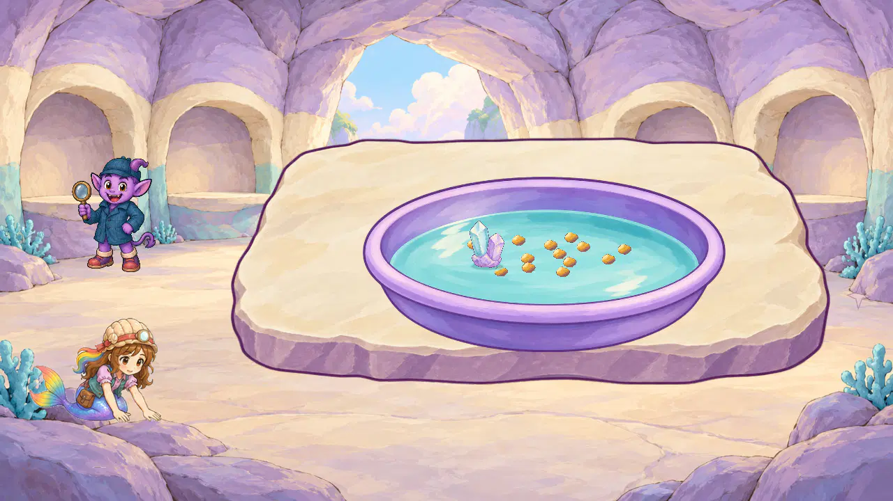

Every image directly reviewed. Current pan/slab/grain/mineral source and visible material4.6. Final isolated invitation and mineral-water contact4.5 provisional. The earlier hidden support, distorted pan, flat grains and displaced contact remain inspectable; none are overwritten. Roshan hands remain disconnected2.7. Room is1672x941 reference-only, not runtime-ready. No complete panning, ordinary training/story, device/child/owner or comprehensive final approval.
Current6 corrected painted views · Initial18 aspect/containment views · 18 painted-grain/hidden-support views · 18 visible-support/displaced-contact views · All60 individual scores and hashes
